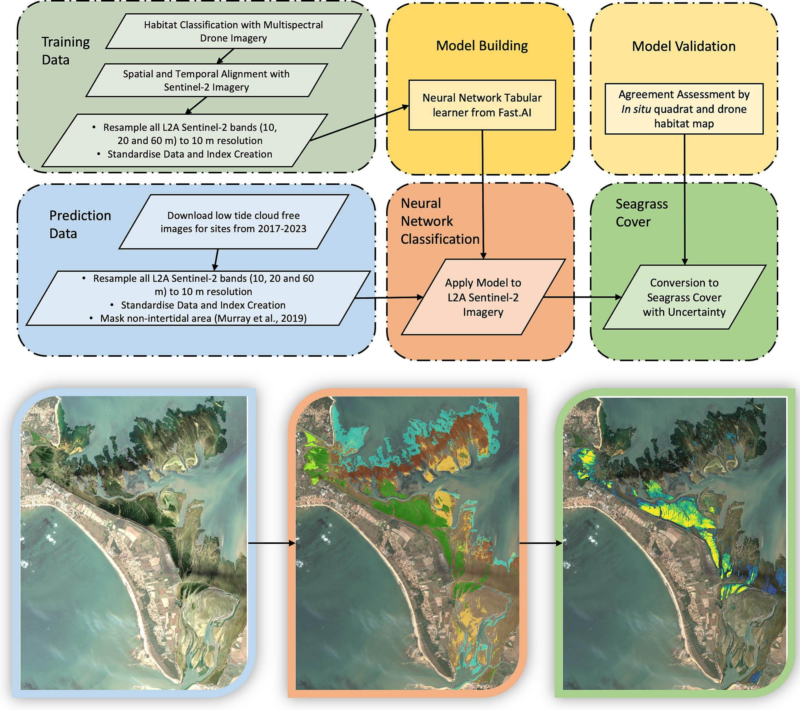

6 General conclusions and future perspectives
This doctoral research successfully addressed its principal objectives, which were to: (1) demonstrate the effectiveness of RS for mapping soft-bottom intertidal vegetation at multispectral resolution, (2) developmachine learning algorithms for accurate vegetation classification and ecosystem monitoring, and (3) apply the methodology to map invasive species and analyse the effect of heatwaves on seagrass. This work underscores the potential of RS technologies in addressing ecological challenges in intertidal zones, including the impacts of climate change, anthropogenic pressures, and habitat fragmentation. By demonstrating improved accuracy in habitat classification, from seagrass discrimination to IAS mapping, this work highlights the critical role of multispectral and hyperspectral data in obtaining explicit spatial distribution maps of the main taxonomic units of intertidal vegetation. Integrating ground-based, drone, and satellite observations proved pivotal in bridging spatial and temporal gaps, enabling a more comprehensive understanding of ecosystem structure and dynamics. This concluding section reviews the key scientific advancements made through the application of RS to intertidal ecosystems, the challenges encountered, and future research directions.
6.1 Macrophytes discrimination and associated challenges.
This work has demonstrated the capability of multispectral RS when combined with sophisticated machine-learning techniques to differentiate between various types of intertidal vegetation, even among plants with similar pigment compositions. This capability was initially validated theoretically using a hyperspectral library degraded to the spectral resolution of several sensors. It was subsequently confirmed using a multispectral camera mounted on a drone. The distinction was particularly challenging between green macrophytes, such as seagrass and green macroalgae, which share similar pigment compositions and, consequently, spectral signatures. However, slight variations in the spectral signatures of intertidal green macrophytes enable this discrimination to arise from differences in the proportions in which these pigments are present in each vegetation type. Pigment concentrations and ratios are not static over time following phenological cycles, and are impacted by stress conditions or may not be uniform within a species due to phenotypic variability. The classification method was developed across a wide geographical range, covering spring, summer and early fall conditions, with the initial objective of discriminating among green macrophytes. The Drone Intertidal Substrate Classification of Vegetation (DISCOV) machine-learning algorithm was designed to be dynamic and adaptable, allowing continuous evolution over time. The algorithm is open-source, with its complete code and training/validation dataset openly shared on GitHub (https://github.com/SigOiry/ ; Oiry et al. (2024)). The Shiny application used to create an independent validation dataset for assessing model performance in Chapter 4 is also openly available (https://oirysimon.shinyapps.io/shiny_validate/). This flexibility proved invaluable when adapting the algorithm to specifically target a species from a different class of intertidal vegetation: the invasive rhodophyte Gracilaria vermiculophylla.
Interestingly, DISCOV v1.0 exhibited poor performance in identifying this red macroalgae, despite its distinct and unique spectral signature attributed to the presence of phycocyanin and phycoerythrin. The algorithm’s underperformance was traced to the lack of enough samples of the rhodophyta phylum in the original training dataset, confusing with other taxonomic units when encountering this specific spectral signature during prediction. This issue was promptly addressed by updating the model’s training dataset to include more red algae samples. The updated model outperformed the original version on the new dataset while maintaining nearly the same accuracy on the original dataset. Including a more diverse training dataset improved DISCOV’s performance across broader ecological contexts. Expanding the geographic and temporal range of data collection has been shown to enhance algorithm robustness and adaptability. By incorporating spectral data from multiple seasons and regions, the algorithm could better account for temporal variations in pigment concentrations and environmental factors, ensuring more reliable predictions across diverse conditions.
6.2 Drone technologies for coastal monitoring
Unmanned Aerial Vehicles (UAVs) have become valuable tools in coastal monitoring, offering high-resolution spatial data and flexible deployment across diverse environments. Their capacity to capture fine-scale habitat heterogeneity and track rapid environmental changes has significantly improved our ability to monitor intertidal and nearshore ecosystems. UAVs now complement traditional remote sensing approaches by addressing observational gaps, particularly in areas where satellite data are limited by cloud cover, tidal constraints, or coarse spatial resolution. Their applications range from shoreline erosion assessment to habitat mapping and water quality monitoring, and they are increasingly integrated into aquaculture management.
Recent studies have demonstrated the potential of UAVs for monitoring aquaculture systems. Nurdin et al. (2023) used UAV-based multispectral imaging combined with machine learning to estimate biomass and carrageenan content in Kappaphycus alvarezii seaweed farms in Indonesia. Using a Random Forest classifier, they identified culture lines on drone images acquired on culture plots, and then assessed the fresh weight and Carrageenan content (Figure 6.1) of cultivated algae. This automated approach provided accurate stock assessments, reducing reliance on labor-intensive field surveys.
Similarly, Román et al. (2023) applied UAV-derived high-resolution imagery to monitor intertidal oyster farms in Bourgneuf Bay, France (Figure 6.2). Using machine learning classifiers, they have successfully identified aquaculture structures, classified mesh bag sizes, and measured table heights, illustrating how UAVs can serve as efficient and cost-effective alternatives to traditional stock assessment methods. These examples highlight the growing role of UAVs in aquaculture, facilitating more precise monitoring and improving resource management.
Future developments in UAV technology are expected to enhance automation, scalability, and integration with other remote sensing platforms. One emerging direction is the use of autonomous UAV networks capable of conducting large-scale environmental surveys with minimal human intervention. Such networks could function as coordinated swarms, collecting and analyzing data in near real-time, enabling continuous monitoring of sediment transport, habitat changes, and pollution dispersion. Advances in AI-driven image processing will further refine habitat classification and ecological monitoring, reducing manual interpretation requirements and increasing the efficiency of large-scale assessments.
Integrating UAV and satellite remote sensing wil also likely improve coastal monitoring. By combining UAV-derived high-resolution imagery with the broad spatial coverage of satellite data, researchers can optimize local-scale accuracy while extending monitoring efforts across regional and global scales. UAV data are already used to validate and improve satellite-based habitat classifications, and ongoing research will likely see UAVs playing a greater role in training machine learning models to enhance the accuracy and consistency of satellite-derived environmental datasets (Davies et al., 2024a; Oiry et al., 2024).
Advancements in UAV sensor technology will further expand their capabilities. The miniaturization of hyperspectral and LiDAR sensors will allow UAVs to capture finer spectral and structural details, improving habitat discrimination and substrate characterization (i.e. the future generation of DJI Mavic will likely incorporate LiDAR technologies in a drone of less than 2 kg, fitting in a backpack). This is particularly relevant for mapping seagrass and macroalgae, where subtle spectral variations are critical for species differentiation (Davies et al., 2023). Additionally, UAV-mounted thermal and fluorescence sensors could improve real-time water quality assessments, detecting variations in chlorophyll concentration, suspended sediments, and temperature anomalies linked to environmental stressors (Bendig et al., 2025; Pillay et al., 2024; Román et al., 2022). Beyond passive observation, UAVs may increasingly be used in active intervention strategies for coastal management. Research explores UAV deployment of environmental monitoring instruments, such as floating sensors and water samplers, to gather in situ data from remote or inaccessible locations (Lariosa et al., 2024; Liu et al., 2025). UAVs have also been proposed for coastal restoration efforts, with systems capable of dispersing biodegradable seeds to support the regeneration of mangroves, salt marshes, seagrass meadows, and dune vegetation (Marzuki et al., 2021). These applications align with broader conservation goals, integrating real-time monitoring with adaptive management strategies that enable rapid response to environmental changes.
Despite their advantages, several challenges remain for large-scale UAV implementation in coastal research and management. Regulatory restrictions, limited flight endurance, and data processing constraints continue to hinder widespread adoption. Future research should prioritize improving UAV battery life, streamlining real-time data transmission, and developing standardized protocols to ensure consistency across monitoring programs. Addressing these limitations will be essential to harness the potential of UAV technology in coastal ecosystems fully.
As UAV technology continues to evolve, its role in coastal monitoring will likely expand further. Combining AI-driven automation, advanced sensors, and real-time data processing will enable more efficient and adaptive monitoring approaches, providing critical insights into coastal dynamics. By integrating these technological advancements, UAVs will improve our ability to monitor intertidal environments and support proactive conservation and management strategies. UAVs are expected to play an increasingly central role in coastal resilience efforts, offering innovative solutions to address the growing challenges of climate change and anthropogenic pressures on coastal ecosystems.
6.3 Drone and Satellite Interactions
UAVs provide high spatial resolution imagery, essential for capturing fine-scale heterogeneity, enabling the observation of subtle spatial patterns within habitats, and validating data derived from lower-resolution satellite imagery. High-resolution multispectral drones, when paired with classifier models, facilitate precise habitat mapping by identifying variations that may not be apparent otherwise. Furthermore, these drones produce large training datasets that are critical for enhancing the accuracy of ML models based on deep-learning architectures in satellite-based RS. Integrating UAV-derived observations and field-specific data is particularly relevant for developing machine-learning workflow in complex environments such as intertidal zones.
Satellites like Sentinel-2 complement UAVs by offering broad spatial coverage and consistent temporal monitoring, facilitating seasonal and inter-annual changes assessment. This enables systematic analysis of long-term trends and spatial dynamics across expansive geographic areas and quantifying large surfaces. While drones excel in localized, high-resolution observations, satellites provide scalable and cost-effective solutions for monitoring intertidal ecosystems at regional and global scales. This integration ensures that monitoring programs benefit from detailed localized insights while maintaining a broader ecological context.

The combination of these technologies allows us to leverage their respective strengths. For instance, UAV-acquired habitat data significantly enhance and validate satellite-based classifications, as demonstrated in the ICE CREAMS model (Davies et al., 2024b, 2024a), where outputs of DISCOV were used to train and validate seagrass habitat classifications across Europe (Figure 6.3). This hybrid methodology balances local accuracy and scalability, reducing the costs associated with large-scale monitoring while preserving the depth of localised observations necessary for comprehensive assessments.
Integrating drone and satellite technologies enhances the ability to monitor, analyse, and manage intertidal ecosystems effectively. By combining detailed precision with extensive coverage, these technologies address scientific and environmental challenges efficiently.
The Intertidal Classification of Europe: Categorising Reflectance of Emerged Areas of Marine vegetation with Sentinel-2 (ICE CREAMS, Davies et al. (2024b) ; Davies et al. (2024a)) model has been developed in parallel to DISCOV, using its outputs as categorical input for the training on Sentinel-2 reflectance data. Its usage is comparable to DISCOV but it uses satellite reflectance instead of drones.
This allows for the spatial, and temporal upscaling of the methodology presented in this thesis, to map intertidal vegetation across Europe. Developed by Davies et al. (2024a) using DISCOV outputs, this method has been employed to analyze the phenology of seagrasses across a 23° latitudinal gradient in Europe. Utilising Sentinel-2 data since 2017, the study has revealed a clear latitudinal pattern in seagrass phenology. In northernmost meadows, seagrasses disappear entirely during winter, reaching their maximum extent in late August. In contrast, southernmost meadows exhibit minimal seasonal variation, maintaining relatively stable coverage throughout the year and peaking in extent around early February (Figure 6.4).
ICE CREAMS has also been used to show the trend of intertidal seagrasses in Europe over time, with some study sites showing stability over time and others showing instability (Figure 6.5). Some sites, like Bourgneuf Bay and Cádiz Bay, demonstrated consistent increases in seagrass cover over the study period (2017–2023), while others, such as Strangford Lough or Beltringharder Koog remained stable (Davies et al., 2024a).
6.4 Assessing Coastal Ecosystem Threats Through Remote Sensing
Chapters 4 and 5 illustrate how remote sensing can be utilized to assess threats to coastal ecosystems. They address both biotic pressures, such as the mapping of the alien invasive Gracilaria vermiculophylla (Chapter 4), and abiotic pressures, such as the impact of heatwaves on seagrass meadows (Chapter 5).
Coastal ecosystems, including seagrass meadows and intertidal habitats, face diverse threats such as climate-induced stress, eutrophication, and habitat fragmentation. While traditional field surveys provide valuable insights, they are often time-consuming and limited in scope. Remote sensing complements these methods by enabling consistent, high-resolution monitoring over large areas. Multispectral and hyperspectral imaging, in particular, allow for detailed analysis of vegetation health, species composition, and stress indicators (see Chapter 4 & 5, Muller-Karger et al. 2018; Murray et al. 2015). Furthermore, technologies such as LiDAR and Synthetic Aperture Radar (SAR) enhance the precision of topographic and hydrological assessments, which are crucial for understanding elevation changes and storm surge dynamics.
Monitoring coastal threats through remote sensing relies on satellite-based platforms such as Sentinel-2, Landsat, and MODIS. These platforms provide data to evaluate changes in vegetation indices (e.g., NDVI, SHSI) and other parameters critical to ecological health. These indices play a key role in detecting early signs of ecosystem degradation, such as seagrass browning or the proliferation of invasive species (Chapter 4 & 5). Additionally, airborne sensors and unmanned aerial vehicles (UAVs) enhance spatial resolution, enabling the mapping of finer-scale features such as algal blooms or sediment displacement caused by coastal erosion or invasive species (Novais et al., 2023). Advanced machine learning models applied to remote sensing data are increasingly used to detect and predict these phenomena, leveraging large datasets to improve the accuracy of coastal hazard forecasts.
Remote sensing also plays a significant role in structured ecosystem risk assessments by integrating spatial and temporal data into predictive models. For instance, the DAPSI(W)R(M) framework uses remote sensing data to analyze drivers, pressures, and state changes, supporting holistic management of marine and coastal environments (Mahrad et al., 2020; Murray et al., 2018). Using long-term datasets, remote sensing technologies help identify habitat loss or recovery trends, providing essential tools for researchers and policymakers to address environmental challenges and implement sustainable management strategies (Muller-Karger et al., 2018; Murray et al., 2018). This includes mapping flood risks, assessing the impacts of sea-level rise, and identifying vulnerable zones, aiding disaster preparedness and adaptive planning.
Through its environmental monitoring and modeling applications, remote sensing provides a comprehensive understanding of coastal ecosystem dynamics. Its dual ability to offer large-scale overviews and detailed local assessments makes it an indispensable resource for managing and mitigating the impacts of anthropogenic and natural stressors on fragile coastal zones. As cloud-computing platforms and integrated GIS technologies evolve, they further expand the remote sensing capabilities for real-time and collaborative environmental monitoring.
6.5 Perspectives
Seagrass meadows are experiencing widespread global declines. They are increasingly threatened by human activities such as coastal development and declining water quality. While some areas show signs of stabilisation or recovery, losses continue to outpace gains globally. The variability in seagrass trends highlights the urgent need to focus on restoration efforts alongside understanding the drivers of change, as improved restoration strategies are essential for reversing declines and supporting long-term conservation. Seagrass restoration refers to the active and strategic process of reestablishing seagrass meadows in areas where they have been degraded or lost, aiming to reverse habitat loss and enhance ecosystem resilience. These efforts involve transplanting seagrass shoots, planting seeds, enhancing natural recovery processes, and improving environmental conditions to support seagrass growth. RS offers precise tools for monitoring and enhancing seagrass restoration by providing high-resolution spatial data to assess transplanted meadows and detect changes in coverage and health (Ventura et al., 2022).
For instance, in Arcachon Bay, France, the seagrass meadows, historically covered approximately 40 km² of the bay, making it one of the largest seagrass habitats in Europe (Cognat et al., 2018). This meadow experienced a drastic decline, losing over 40% of its coverage between 1989 and 2019 (Muller et al., 2024). Recognising this loss, the Natural Marine Park of Arcachon Bay launched active restoration efforts, including the transplantation of Zostera noltei sods and participatory seed collection initiatives. Laurent (2024) has shown that after the first monitoring, 85% of the transplanted sods (405 out of 476) had survived, with all nine sods surviving in 68% of the sites (36 stations), showing a promising start. However, on the two flats monitored twice, a high mortality rate of around 60% was recorded during the second monitoring. Additionally, 82% of transplants expanded at the first monitoring, but only 10% maintained this expansion in the second monitoring, reflecting the complexity of long-term restoration success. This case study highlights the challenges faced by seagrass restoration efforts.
RS can play a critical role in identifying suitable areas for seagrass restoration by mapping habitat suitability and assessing anthropogenic pressures (Hu et al., 2021). Integrating spatial data with environmental predictors such as water quality, depth, and substrate type makes it possible to pinpoint locations with the greatest potential for successful restoration while minimising risks from human activities. This technology supports the evaluation of restoration success and facilitates adaptive management by identifying environmental conditions that favour seagrass recovery. By integrating remote sensing with ecological studies, restoration efforts can be more targeted, efficient, and adaptive to ongoing environmental changes.
The DISCOV model could support seagrass restoration efforts with its ability to classify vegetation at very high spatial resolutions and its demonstrated accuracy in distinguishing seagrass from other green macrophytes. By offering precise habitat classification and mapping, DISCOV can aid in identifying optimal restoration sites (e.g. finding sites that limit competition with other species) and monitoring restored meadows. Its application could enhance our capacity to adapt restoration strategies based on real-time, fine-scale data, ultimately supporting the resilience and recovery of seagrass ecosystems. DISCOV and ICE CREAMS are smart data tools that are planned to be applied in the EU restoration project REBORN (Unlocking seagRass rEstoration at scale in NWE as a BGI and natural capital OppoRtuNity) submitted to the Interreg program. Satellite and drone imagery will be used to track changes in seagrass distribution in the North-West regions of Europe, identify at-risk areas, and prioritise interventions. As transboundary tools, they will facilitate data sharing and joint management between countries. Satellites and drone images are powerful communication tools for engaging the public and authorities by providing visual, data-rich, and easily interpretable information. They can foster greater public support for restoration initiatives.